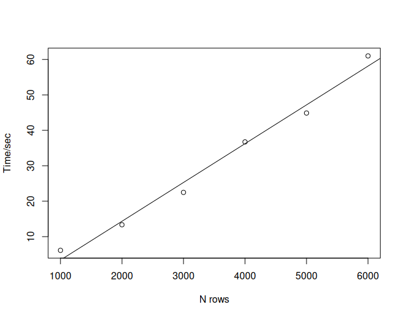

Tips when exporting large listing
Joe Zhu
2025-12-08
Source:vignettes/large_list.Rmd
large_list.RmdIntroduction
For submission, sometimes listings are required. Sometimes large listings can include thousands of patients and tens of thousands of rows. Exporting such large listing files is time-consuming and memory-heavy, and it is not obvious if the job is still ongoing or is already dead. The time cost is mostly due to paginating the listing object into multiple pages.
Consider the following example:
library(rlistings)
iris2 <- do.call(rbind, rep(list(iris), 40))
rlist <- as_listing(iris2,
key_cols = "Species",
disp_cols = c("Sepal.Length", "Sepal.Width", "Petal.Width", "Petal.Length")
)
bench::mark(
a = paginate_to_mpfs(rlist[1:1000, ]),
b = paginate_to_mpfs(rlist[1:2000, ]),
c = paginate_to_mpfs(rlist[1:3000, ]),
d = paginate_to_mpfs(rlist[1:4000, ]),
e = paginate_to_mpfs(rlist[1:5000, ]),
f = paginate_to_mpfs(rlist[1:6000, ]),
check = FALSE,
max_iterations = 1
)It gives the following benchmark results:
expression min median `itr/sec` mem_alloc `gc/sec` n_itr n_gc total_time
<bch:expr> <bch:tm> <bch:> <dbl> <bch:byt> <dbl> <int> <dbl> <bch:tm>
1 a 6.13s 6.13s 0.163 2.17GB 0.816 1 5 6.13s
2 b 13.35s 13.35s 0.0749 8.63GB 1.42 1 19 13.35s
3 c 22.48s 22.48s 0.0445 19.38GB 1.74 1 39 22.48s
4 d 36.73s 36.73s 0.0272 34.41GB 1.80 1 66 36.73s
5 e 44.88s 44.88s 0.0223 53.72GB 1.63 1 73 44.88s
6 f 1.01m 1.01m 0.0166 77.32GB 1.72 1 104 1.01m
# ℹ 4 more variables: result <list>, memory <list>, time <list>, gc <list>It is obvious that the time consumption grows linearly as the rows of data increase.

To decrease the runtime and prevent memory issues, we would recommend splitting the listing object by a grouping variable and exporting the output separately. Consider the following demonstration:
iris3 <- cbind(iris2, gp = rep(c(1, 2, 3, 4, 5, 6), 1000))
rlist3 <- as_listing(iris3,
key_cols = "Species",
disp_cols = c("Sepal.Length", "Sepal.Width", "Petal.Width", "Petal.Length")
)
start.time <- Sys.time()
rlist3 |>
split(rlist3$gp) |>
lapply(FUN = paginate_to_mpfs)
end.time <- Sys.time()
time.taken <- end.time - start.time
time.taken
# > Time difference of 36.06119 secsIn principle, you could consider processing this work with multi-threading to further reduce the runtime.